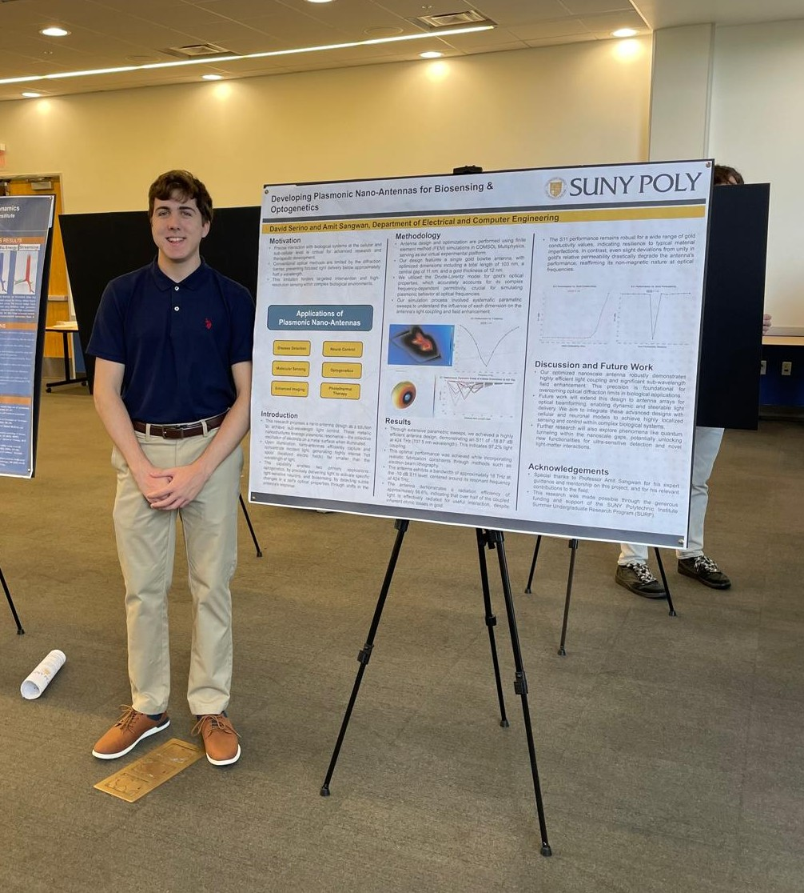
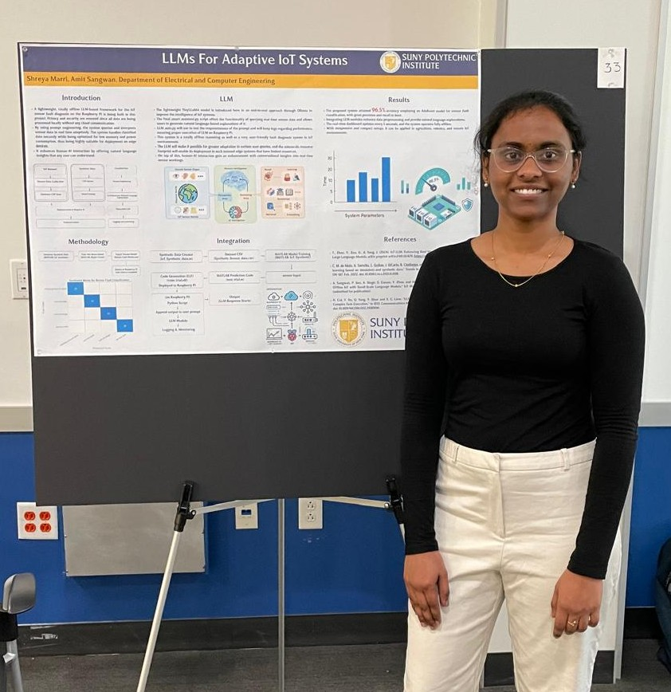
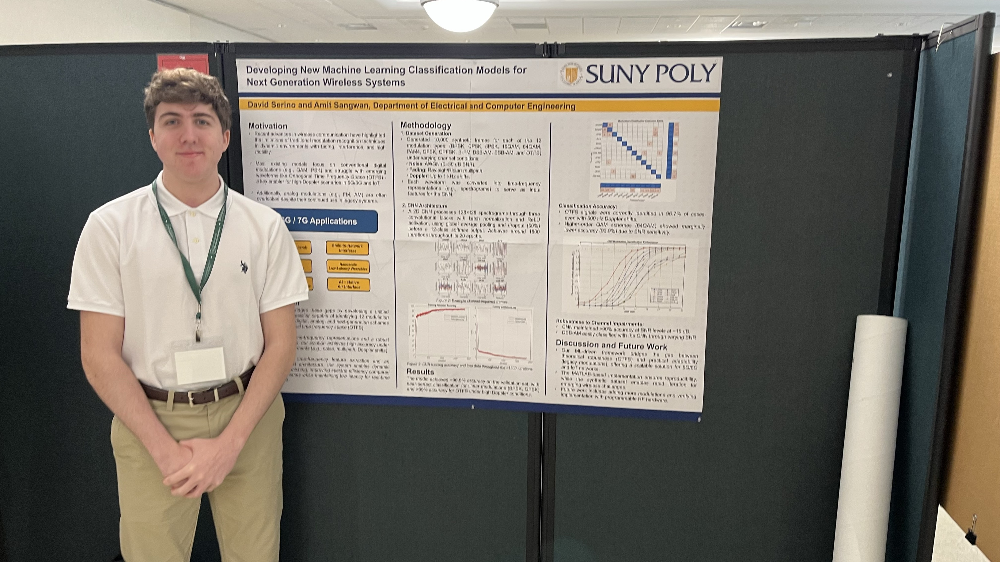
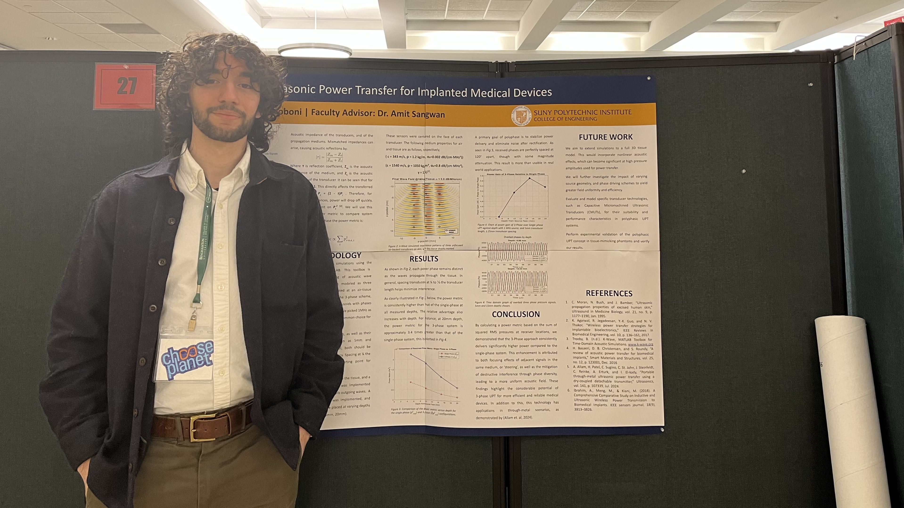

NanoWireless Lab works on nano-scale optical communications, wireless-powered implantable devices, and brain-machine interfaces. We focus on problems at the outer edge of what wireless technology can do.
I am an Assistant Professor at SUNY Polytechnic Institute, where I direct the NanoWireless Lab. My research is at the intersection of nanotechnology, photonics, and wireless systems. The underlying question is how we build communication and sensing infrastructure for a world where electronics operate at the nanoscale and inside the human body.
My group works on three connected problems: nanophotonic and plasmonic communications for ultra-fast on-chip and short-range links; wireless power transfer for implantable and wearable medical devices; and brain-machine interfaces that decode neural signals without surgery, for prosthetics and human-computer interaction.
We explore how light and plasmons can carry information at the nanoscale, reaching speeds and integration densities that conventional electronics cannot.
Nano-scale Optical SystemsWe design implantable devices that are powered wirelessly, removing the need for battery replacement surgery and enabling continuous, long-term health monitoring.
Wearable & Implantable DevicesWe build wearable electronics and non-invasive neural interfaces that read brain signals, with applications in prosthetics and direct human-computer interaction.
Neural Decoding & ProstheticsThe lab is still taking shape. New research directions and collaborations are forming. If your interests overlap with ours, get in touch.
Collaborations Welcome



NanoWireless Lab is a young, intentionally small research group at SUNY Poly. We work closely with undergraduate and Master's students on real research problems — students who make meaningful contributions are recognized as co-authors. We are also actively building collaborations with PhD-granting institutions and industry partners in the region.